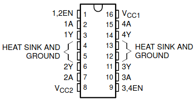

Motor Drives¶
In general a motor drive is a power electronic device used to control the power delivered to a motor. The purpose could be either torque, speed or position control of the rotating motor shaft. At a high level the motor drive consists of a controller, and an amplifier (power electronics) which amplify the output from the controller to levels sufficient to drive the motor.
There are many different types of motors in existence, and each type warrants its own particular motor drive design. Unless the controller is very simple, microcontrollers are typically used for the controller, and the power electronics will be selected depending on type and size of the motor.
DC Motors: This is a very common motor in cheap low power applications. We can see it in remote control cars, robots, etc. This motor has a simple structure. It will start rolling by applying proper voltage to its terminals and change it’s rotational direction by switching voltage polarity. The DC motor torque (and thus speed) is directly controlled by the applied current. Current depends on voltage, and thus a voltage level less than the maximum tolerable voltage, will cause a speed that is less than maximum speed. By varying the applied voltage we will in practice wary the speed of the motor.
Stepper Motors: In some projects such as 3D printers, scanners and CNC machines we need to know motor spin steps accurately. In these cases, we may use stepper motors. Stepper motor are electric motors that divides a full rotation into a number of equal steps. The amount of rotation per step is determined by the motor structure. These kind of motors may be designed to have a very high accuracy if needed.
Servo Motors: There are many different types of motors that could be considered as servo motors. What they have in common it that they typically provide position control service. By using a servo you will be able to control the amount of shafts rotation and move it to a specific position. They usually have a small dimension and are the best choice for applications such as robotic arms.
AC motors Three phase AC motors are by far the largest consumer of electrical energy in the world. There are many different varieties of AC motors, but the type known as the induction motor serves a particularly important role in industry. This type of motor is typically used in applications where accuracy is less important, and for a very wide range of power levels from watts to megawatts. Examples include the driving of pumps, fans, drums, batching plants etc.
It is typically not possible to connect motors to microcontrollers or controller board such as Arduino directly. Unless the motor is really small it will require more current than the controller is able to supply. The Arduino UNO has a maximum drive capability of 40 mA on each pin. Thus we need some form of circuit to amplify the signal from the controller, this kind of circuit is called motor driver, or motor drive. The driver is an interface circuit between the motor and controlling unit to facilitate driving. Drives come in many different types [].
In this lecture we will look at DC-motor drives. The understanding of DC-motor drives is a good foundation for understanding more advanced AC-motor drives.
Introduction to DC motors¶
DC motors are divided into 2 main categories: brushed and brushless DC motors. We can define a brushed DC motor as a motor with internal mechanical commutation. It is designed to be powered by a direct current source. On the other hand, in the brushless DC motors, there is no physical contact between coils and the field magnet (stationary and rotaty parts). The brushless DC motor is really an AC motor with a electronic DC to AC converter placed inside the motor housing.
A brushless DC motor uses a permanent magnet as its external rotor and there are three phases of coils surrounding it. A specialized sensor is also typically placed in the setup to track the position of the rotor as it is moving, where the rotor position signals are being sent to a controller. A term often used for these devices is ESC (electronic speed controller). The ESC regulates the motor speed in order to track some reference speed, and can also provide dynamic braking where the rotational energy of the motor is converted back to electrical energy.

A brushed motor on the other hand, has a mechanical DC to AC converter (commutator), and the primary current is flowing in the rotor. As the rotor rotates so does the commutator, this causes the supply current to move to different coils and thus the direction of the generated magnetic field also moves.
..a configuration of wound wire coils, carrying out the duties of a two-pole electromagnet. The direction of the current is controlled by the commutator and this ensures the flow through the armature.
Brushed DC motors have been in commercial use since 1886. Brushless motors, on the other hand, did not become commercially viable until 1962. Brushed DC motors develop a maximum torque when stationary, linearly decreasing as velocity increases. Some limitations of brushed motors can be overcome by brushless motors; they include higher efficiency and a lower susceptibility to mechanical wear. These benefits come at the cost of potentially less rugged, more complex, and more expensive control electronics [].

Brushed DC motor operation¶
A brushed DC-motor has a torque proportional to the current passing through the armature of the motor [].
If the magnetic field of the stator is constant, the only variable in the torque equation is the armature current. Hence we can write:
Where \(k_T\) is the torque constant for the motor, and \(I_a\) is the armature current.
As the windings of the rotor interact with the stator magnetic field, an electromotive force (EMF) is produced. This is a voltage and is proportional to the angular velocity (speed) of the rotor:
Where \(k_e\) is the EMF constant for the motor, and \(\omega_m\) is the mechanical angular velocity. Based upon Newtons second law the following equation can be derived:
Where \(J\) is the moment of inertia, \(B\) is the coefficient of viscous friction, and \(T_L\) is the load torque.
Futhermore based on Kirchhoffs voltage law the following electrical equation is derived:
If we use SI units, the torque constant, and the EMF constant has the exact same numerical value:
Transfer function¶
Note
An understanding of the transfer function is not required for the exercises in this lesson, but is important for closed loop control of the DC-motor. It is included here for completeness.
The transfer function is very useful when analyzing the transient behavior of the motor. By using the laplace transform, we arrive at the following results for the mechanical and electrical differential equations:
A transfer function relates some input to some output. We have several possible transfer functions for the DC motor depending on the value which is of interest.
The motor speed for a given armature voltage
The motor speed for a given torque
The motor armature current for a given armature voltage
The motor armature current for a given torque
The armature current can be expressed as:
The armature angular velocity can be expressed as:
Neglecting the load torque \(T_L\) and remembering that \(k_T = k_e = k\), we can write:
We want to solve for \(\frac{\omega_m}{V_a}\), we start by isolating \(\omega_m\):
Multiplying by \(\frac{k}{k}\) in the second term we can write:
Thus the transfer function between speed and applied voltage is given by:
Similar derivations can be performed for the other transfer functions if needed.
By choosing the mechanical angular velocity and the armature current as state variables, we arrive at the following state-space representation for the motor:
It can be insightful to define and use time constants in the transfer function expressions. A mechanical time constant can be expressed as:
A electrical time constant for the armature circuit can be defined as:
Brushed DC-motor drive¶
In this section we will cover how to control a brushed DC-motor by the Arduino UNO.
Control loops¶
From a mechanical point of view we have several possible control objectives:
Torque control (current control, as mechanical torque is proportional to current)
Speed control and control of rotational direction
Position control
The three control objectives in the above list are obviously related to each other. The change in position depend on the speed, and the change in speed depend on the torque. Hence we will often find that a cascaded control structure is used, e.g. the reference input to the torque controller could be the output from the speed controller. Accurate control required feedback, this could be in the form of a current sensor measuring the armature current, and a mechanical speed or position sensor on the motor shaft.
If you simply apply a voltage to the motor armature this will result is some current, which in turn causes torque and rotation of the motor. This is called open loop control since you not feeding back any of the resulting motor states, i.e. the control loop is not closed.. If you are not measuring anything it is hard to tell what the exact operating conditions (e.g. the speed of the motor) will be, but some previous knowledge about the system can allow you to estimate. E.g. by previous measurements you might know that in a given load situation applying 12 V will cause a speed of approximately 1000 RPM.
Closed loop control requires additional sensors, and knowledge of control theory. Thus In this lesson we will only consider open loop control, this is the foundation upon which closed loop control can be built in a future lecture.

Motor Speed Adjusting by PWM¶
The most common way to vary the voltage level (and for AC motors also the frequency) in modern motor drives is by using pulse width modulation. A basic understanding of this concept is essential for anyone designing such drives.
Note
As this course is a basic course we will not have time to go into all the details of how the PWM operates.
The Atmega 328 supports two major types of PWM:
Fast PWM
Phase correct PWM
Fast PWM mode¶
The frequency of the fast PWM mode is given by:
Where clock_speed is the speed of the Arduino CPU clock (16 MHz by default). The prescaler is a number that is scaling the clock, and top_value is the maximum value of the counter.
Phase correct PWM¶
The phase correct PWM is a mode where the phase of the PWM signal remains constant. This is important in some applications, such as AC motor drives.
Available outputs¶
The outputs that support PWM are labeled with a small sine wave symbol (actually a tilde “~”) on the Arduino board. The following table lists some important information regarding the PWM outputs. The switching frequency is only the default value. It may be changed by direct register manipulation, but the Arduino library does not have any functions to change it.
Pin number |
Timer |
Switching frequency |
3 |
2 |
490 Hz |
5 |
0 |
980 Hz |
6 |
0 |
980 Hz |
9 |
1 |
490 Hz |
10 |
1 |
490 Hz |
11 |
2 |
490 Hz |
Four quadrant operation¶
The rotating shaft of an electric machine has two fundamental parameters, torque and speed. The speed may be forward or reverse, and the torque may be motoring or braking. Thus we have four possible modes of operation, i.e. four quadrant operation.

For a brushed DC-motor it is possible to operate in all four quadrants by controlling the voltage applied to the armature. The motor drive must have the ability to control both the magnitude, and polarity of the voltage, and the circuit must allow the current to flow in both directions.
When the drive is operating in a mode with negative torque with respect to the rotating direction it is said to be in breaking (generator) mode. In this mode the energy is flowing from the motor back to the power source.
See also
How a brushed DC works: BDC principle
How a brushless DC works: BLDC principle
Practical demonstration of the four quadrant operation: four quadrant
Speed-Torque relation in efficiency: Motor efficiency map of a DC motor
..Motor Direction Setting by Switching .. ————————————-
Simple motor drive example using single transistor¶
In this example we will be using a IFR520N transistor to drive the small DC-motor that comes as part of the Arduino starter kit. The IRF520N datasheet provides the required details on the electrical limitations of the transistor, but for this example you should only trust us in that it will operate within limits.
The function analogWrite() will be used to generate a PWM signal to the transistor, and the switching frequency will stay at it’s default value.

Exercise: start and stop of motor¶
Do the wiring according to the previous drawing
Add code to properly read, edge detect, and debounce a push button
Use the rising edge of the push button to toggle the motor driver on, or off. The duty cycle should be 50%.
Read a parameter from the UART, which is used to set the duty cycle. The parameter should be a number between 0, and 100. Anything else should produce an error message.
#include <Arduino.h>
const uint8_t pwm_pin = 9;
const uint8_t on_off_button = 12;
uint8_t old_button_state = 0;
uint8_t motor_enable = 0;
void setup() {
pinMode(pwm_pin, OUTPUT);
pinMode(on_off_button, INPUT);
Serial.begin(9600);
}
void loop() {
uint8_t button_state = digitalRead(on_off_button);
if(button_state != old_button_state){
old_button_state = button_state;
// TODO: This code requires debouncing of the push button.
if(button_state == 1){
if(motor_enable == 1){
Serial.println("Motor disabled.");
analogWrite(pwm_pin, 0);
motor_enable = 0;
}
else {
Serial.println("Motor enabled.");
analogWrite(pwm_pin, 100);
motor_enable = 1;
}
}
}
}
LM293D H-Brigde¶
An H bridge is an electronic circuit that switches the polarity of a voltage applied to a load. These circuits are often used in robotics and other applications to allow DC motors to run forwards or backwards [].
This section provides a basic overview of the LM293D driver. More details about are available in the datasheet
The L293D is a quadruple high-current half-H driver. The D in the name signifies that this version incorporates diodes on the outputs. It has a maximum output current of 600 mA, a maximum switching frequency of 5 kHz, and supports a voltage range from 4.5 to 36 V.

Depending on the degree of control that your application requires there are several possible ways to connect the motor.

The following tables provides an overview of the possible control signal inputs, and the effect they will have in a DC motor drive application.

Source: The L293 datasheet¶

A very basic example for the LM293D¶
The following code listing provides a very basic example on how to set a specific operating mode for the LM293D motor driver. Two digital outputs on pin 4, and 5 are used to set the rotational direction for the motor by setting the voltage polarity. A third digital output on pin 6 is used to provide a PWM signal to the enable input which causes the voltage applied to the motor to switch on and off quickly.
The motor supply voltage pin is connected to the 5 V output from the Arduino. This is fine for a small motor, but larger motors with high current or voltage rating will require an external supply to this pin.
#include <Arduino.h>
const uint8_t en_pin = 6;
const uint8_t a1_pin = 5;
const uint8_t a2_pin = 4;
void setup() {
pinMode(en_pin, OUTPUT);
pinMode(a1_pin, OUTPUT);
pinMode(a2_pin, OUTPUT);
digitalWrite(a1_pin, HIGH);
digitalWrite(a2_pin, LOW);
analogWrite(en_pin, 128);
}
void loop() {
// Nothing to do here..
}
Note
Applying PWM to the 1A, and 2A pins will also cause the output voltage to be modulated. This will not have the exact same effect though. The difference is outlined later in the lesson.
A slightly more complete example with start, stop, and emergency stop¶
The emergency stop is implemented by forcing the motor to stop as quickly as possible. By setting both 1A, and 2A low (or high) simultaneously while keeping the EN signal high the motor terminals will be short circuited to each other. This will cause a large current to flow in the motor windings, and the rotational energy will be dissipated as heat in the winding resistance.
Regenerative braking of the motor¶
It is relatively straight forward to apply control signals which converts the rotational energy of the brushed DC motor back to electrical energy. This is the most energy efficient way of breaking the motor, as the energy can be recovered and used again for another purpose. Regenerative operation on the arduino board can be problematic, as the USB power supply does not support reversed energy flow. The same is true if the supply comes from a battery which is not rechargeable. If one is pushing energy in to a DC source which does not support regenerative operation, the result will typically be that the voltage at the filtering capacitors in the DC section will increase. At some point the voltage will exceed the rating of the capacitors, and magic smoke will come out. Thus the first ting you have to do before considering regenerative operation, is to verify that the source will be able to handle it.
The trick to achieve regenerative braking it to increase the voltage coming from the motor to a level above the source voltage which was previously supplying the motor. This will allow the current direction to reverse, and thus the power flow will also be reversed. The voltage produced by the motor is proportional to the speed as well as on the magnetic field in the stator. It will always be lower than the source voltage, unless one of the following conditions are met:
For a electrically excited DC motor, if the field current is increased.
For any DC motor if some external mechanical force is driving the motor to a sufficiently high speed.
Unless you have a field winding (the small DC motor in the examples provided in this lesson does not) you will have to increase the induced voltage after it has been generated. In order to increase the motor voltage an additional external voltage converter (these are known as boost converters) could have been placed between the motor and the source, and activated when entering breaking mode. It turns out however that it is possible to exploit the internal inductance of the motor in order to increase (boost) the voltage.
If the transistors are switched correctly and at an appropriate switching frequency the only condition needed to obtain the regenerative braking is that the duty cycle of the PWM in reduced to a value below the previous steady state duty cycle. The following block diagram gives some insight in to the internal operation of the L293D:

Source: The L293 datasheet
For each of the four drivers we have the following truth (function) table:

Source: The L293 datasheet
If the enable (EN) signal is low, the control signal (A) is ignored and the output goes in to a high impedance (high Z) state. When the enable signal is high, the output follows the control signal (A). By applying PWM to the enable signal and leaving the A signals fixed regenerative braking will be impossible. Whenever the output is in a high Z state, the motor current will have to circulate through the freewheeling diodes. If however the PWM signal is applied to e.g. 1A while 2A is low, a reduction in duty cycle will allow the voltage to be boosted by the motor inductance. For the opposite rotational direction the PWM signal should be applied to 2A while 1A is low.
Feature rich motor drive example using the L293D¶
The following example is a slightly more complete implementation of motor control using the L293D driver. The implementation uses one push button for starting, and one for stopping the motor. The voltage on analog input A0 is used to control the duty cycle of the pulse width modulation.
#include <Arduino.h>
const uint8_t enable = 10;
const uint8_t input_1 = 9;
const uint8_t input_2 = 8;
const uint8_t start_button = 13;
const uint8_t stopp_button = 12;
const uint8_t control_voltage = A0;
uint8_t start_button_event();
uint8_t stopp_button_event();
typedef enum {
FORWARD,
REVERSE,
STOPPED
} rot_direction_t;
void motor_control(uint8_t duty_cycle, rot_direction_t direction);
void setup() {
pinMode(enable, OUTPUT);
pinMode(input_1, OUTPUT);
pinMode(input_2, OUTPUT);
Serial.begin(9600);
}
void loop() {
static uint8_t motor_state = 0;
static uint32_t old_millis = 0;
static uint32_t serial_old_millis = 0;
uint16_t adc_value = 0;
static uint8_t duty_cycle = 0;
if(millis() > old_millis + 50){
adc_value = analogRead(control_voltage);
duty_cycle = adc_value / 4;
old_millis = millis();
}
if(millis() > serial_old_millis + 1000){
Serial.print("Duty cycle: ");
Serial.println(duty_cycle);
serial_old_millis = millis();
}
if(motor_state == 0){
motor_control(0, STOPPED);
if(start_button_event()){
motor_state = 1;
}
}
else if(motor_state == 1){
motor_control(duty_cycle, FORWARD);
if(stopp_button_event()){
motor_state = 0;
}
}
}
void motor_control(uint8_t duty_cycle, rot_direction_t direction){
if(direction == FORWARD){
digitalWrite(input_1, HIGH);
digitalWrite(input_2, LOW);
}
else if(direction == REVERSE){
digitalWrite(input_1, LOW);
digitalWrite(input_2, HIGH);
}
else if(direction == STOPPED){
digitalWrite(input_1, LOW);
digitalWrite(input_2, LOW);
}
analogWrite(enable, duty_cycle);
//digitalWrite(enable, HIGH);
}
uint8_t start_button_event(){
static uint16_t shift_register = 0;
static uint32_t old_millis = 0;
if(millis() > old_millis + 5){
old_millis = millis();
uint8_t input_state = digitalRead(start_button);
shift_register = (shift_register << 1) | input_state | 0xC000;
if(shift_register == 0xE000){
Serial.print("Start event detected.");
return 1;
}
}
return 0;
}
uint8_t stopp_button_event(){
static uint16_t shift_register = 0;
static uint32_t old_millis = 0;
if(millis() > old_millis + 5){
old_millis = millis();
uint8_t input_state = digitalRead(stopp_button);
shift_register = (shift_register << 1) | input_state | 0xC000;
if(shift_register == 0xE000){
Serial.print("Stop event detected.");
return 1;
}
}
return 0;
}
Exercise: LM293D motor drive¶
Use the L293D motor driver and perform the necessary wiring. There should be 3 push buttons and a potentiometer.
Write an application which takes the armature voltage (motor speed) set point as a input from a potentiometer.
Read the signals from three push buttons with proper debouncing, and edge detection.
Add the code to use the first push button to toggle between start and stop.
Add the code to use the second push button to toggle the rotational direction. The program should only allow the direction to change if the motor is first stopped.
Add the code for emergency stop on the third button. If pressed the program should go in to emergency stop mode, and stay there until the controller receives the command “reset”, or “RESET” from the UART.
Test the program, and write a short description about the behavior of your code.
Exercise: motor drive with acceleration ramp¶
In this exercise you are going to develop a motor drive which has an adjustable acceleration, and deceleration ramp. I.e. when the motor is started there will be a acceleration period where the armature voltage is increased linearly from zero, and up to the configured voltage.
Use the program you have developed in the previous exercise as a starting point. Make sure everything in that exercise is working as expected
Add a routine to slowly accelerate the motor from standstill and up to the potentiometer setting. A parameter (const variable) should set the acceleration time, and it should support at least 0 to 20 seconds.
Add a routine to slowly decelerate the motor from nominal operation and down to standstill. If the stop button is pressed while the motor is accelerating, the deceleration routine should take precedence and use the correct portion of the configured deceleration delay down to standstill.
Advanced motor drive example¶
In the following example a potentiometer is used to control the voltage level (i.e. speed) of the motor, one push button changes rotation direction, and the other turns the drive on and off. The main idea is pretty much the same as the first program. The code is a bit more sophisticated and safer to use. The control software is built around a hierarchical State Machine, that simplifyes the management of the different states in which the motor drive may be operating. Put attention of the usage of typedef.
The following state diagram depicts the operation of the software:
![[*] --> STOPPED
STOPPED -> RUNNING : enable_button
RUNNING -> STOPPED : enable_button
STOPPED: motor_control(0, 0);
RUNNING: duty_cycle = analogRead(control_voltage)/4;
state RUNNING {
[*] --> FORWARD
FORWARD -> REVERSE : direction_button
REVERSE -> FORWARD : direction_button
FORWARD: motor_control(duty_cycle, FORWARD);
REVERSE: motor_control(duty_cycle, REVERSE);
}](../../_images/plantuml-211d8b3e18ba1dff509a87cac8bff4e77471ffe4.png)
The following source code listing is the complete software for the motor drive:
Show/Hide Code
#include <Arduino.h>
const uint8_t enable1 = 6;
const uint8_t input1 = 5;
const uint8_t input2 = 4;
const uint8_t enable_button = 12;
const uint8_t direction_button = 11;
const uint8_t control_voltage = A0;
//#define DEBUG
typedef enum {
FORWARD,
REVERSE
} direction_t;
typedef enum {
RUNNING,
STOPPED
} motor_state_t;
void motor_control(uint8_t duty_cycle, direction_t direction);
int buttonPressed_debounce(uint8_t digital_input, uint8_t debounce_delay);
void setup(){
pinMode(enable1, OUTPUT);
pinMode(input1, OUTPUT);
pinMode(input2, OUTPUT);
pinMode(enable_button, INPUT);
pinMode(direction_button, INPUT);
Serial.begin(9600);
}
void loop(){
motor_state_t motor_state = STOPPED;
direction_t motor_direction = FORWARD;
uint8_t duty_cycle = 0;
for(;;){
duty_cycle = analogRead(control_voltage)/4;
#ifdef DEBUG
Serial.print("Duty cycle: ");
Serial.print(duty_cycle);
Serial.print("\n");
delay(1000);
#endif
/*
* State machine for motor control.
*/
switch (motor_state)
{
case RUNNING:
if(buttonPressed_debounce(enable_button, 50)){
motor_state = STOPPED;
Serial.println("Motor stopped.");
}
switch (motor_direction)
{
case FORWARD:
if(buttonPressed_debounce(direction_button, 50)){
motor_direction = REVERSE;
Serial.println("Motor direction reversed.");
}
motor_control(duty_cycle, FORWARD);
break;
case REVERSE:
if(buttonPressed_debounce(direction_button, 50)){
motor_direction = FORWARD;
Serial.println("Motor direction forward.");
}
motor_control(duty_cycle, REVERSE);
break;
default:
motor_state = STOPPED;
break;
}
break;
case STOPPED:
if(buttonPressed_debounce(enable_button, 50)){
motor_state = RUNNING;
Serial.println("Motor enabled.");
}
motor_control(0, REVERSE);
break;
default:
motor_state = STOPPED;
break;
}
}
}
void motor_control(uint8_t duty_cycle, direction_t direction){
if(direction == FORWARD){
digitalWrite(input1, HIGH);
digitalWrite(input2, LOW);
}
else {
digitalWrite(input1, LOW);
digitalWrite(input2, HIGH);
}
analogWrite(enable1, duty_cycle);
}
/*
* Check if button is pressed, i.e. if it is high, and it was low before.
* This version includes a debounce timer.
*
* The debounce time is stored as an array of 16 32-bit integers, thus it is
* not very memory efficient.
*/
int buttonPressed_debounce(uint8_t digital_input, uint8_t debounce_delay) {
static uint16_t lastStates = 0; // Store the states of digital input 0 - 15.
static uint32_t lastEdgeDetect[16] = {0}; // Store the time of the last rising edge.
uint8_t state = digitalRead(digital_input);
// Check if the state of the digital input has changed.
if (state != ((lastStates >> digital_input) & 1)) {
lastEdgeDetect[digital_input] = millis();
}
if((millis() - lastEdgeDetect[digital_input]) > debounce_delay){
lastStates ^= 1 << digital_input; // Store the current state of the digital input.
return state == HIGH;
}
return false;
}
![STATE NORMAL {
[*] --> STOPPED
STOPPED -> ACCELERATING : start_stop_button
ACCELERATING -> RUNNING : setpoint_reached
ACCELERATING -> BREAKING : start_stop_button
RUNNING -> BREAKING : start_stop_button
BREAKING -> STOPPED : zero_reached
BREAKING -> ACCELERATING : start_stop_button
STOPPED: motor_control(0, 0);
}
[*] --> NORMAL
NORMAL -> EMERGENCY_STOP : emergency_stop_button
EMERGENCY_STOP -> NORMAL : start_stop_button
EMERGENCY_STOP : motor_control(0, 0);](../../_images/plantuml-7175e7244f98a053b04ad49bb2fbc27a3bfc0604.png)
{kind=link}
{kind=link}